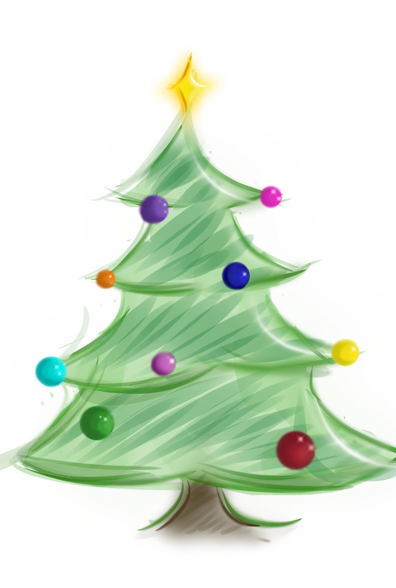

| Choinka | Wysokość |
|---|---|
| Świerk | 170cm |

Choinka
- ustrojone drzewko świerku lub jodły (rzadziej sosny), naturalne lub sztuczne, pierwotnie wiązane z przedchrześcijańską tradycją ludową i kultem wiecznie zielonego drzewka, a obecnie będące nieodłączną ozdobą w czasie świąt Bożego Narodzenia.